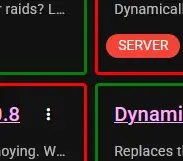
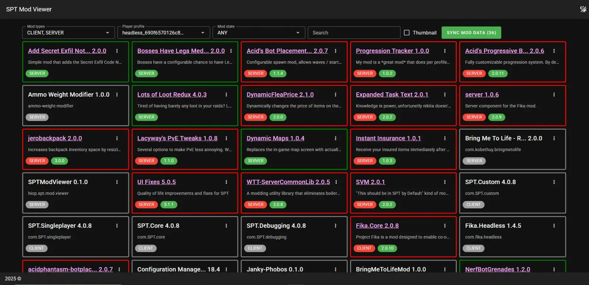
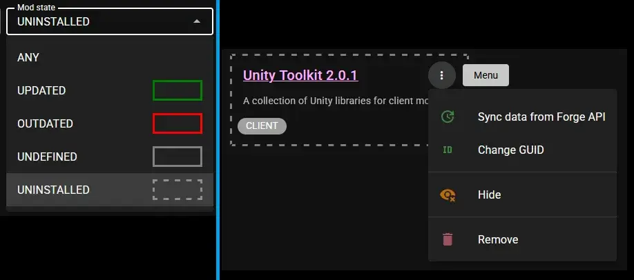

SPTModViewer
- Downloads
- 3,838
- Favourites
- 12
- Mod lists
- 26

This is a server-side mod. It allows you to see which mods are installed on the server and clients(profiles). The data is displayed on a local web page.
Features:
- You can easily track which mods are installed on the server and on clients.
- Compares mod versions with Forge and highlights outdated mods
- Unzip and paste into root game folder (like any other mods)
- Get token from https://forge.sp-tarkov.com/user/api-tokens (read permission only)
- Create file -
SPT\user\mods\SPTModViewer\Configwith nameSptModViewerConfig.json5and your forge token:
{
"forgeApiToken": "YOU_FORGE_API_TOKEN_HERE"
}
- Start the SPT server
- Once the server is fully launched, you can visit the mod’s local web page:
https://127.0.0.1:6969/smv (If the server is not on your computer, use the server IP and port) - If everything is done correctly, you will see a page with your mods.
- Check out the FAQ section
If the FAQ didn’t help and you still have questions, you can ask them in the comments or on the SPT Discord:
https://discord.com/channels/875684761291599922/1439852757212201080
This is mod updater?
NO
I don’t understand what these multi-colored rectangles are?
Each mod is a block. The color of the block’s border indicates the mod status:
- Updated - green (This means that your mod matches the latest version posted on the Forge website.)
- Outdated - red (There is a newer/other version on the Forge website)
- Undefined - grey (The mod was not updated or the mod was not found on the forge site (this can happen for several reasons)
- Uninstalled - grey dashed (The mod has been removed from the client or server)
The profile selection is empty!?
If you don’t see player profiles (in the filter), you need to first log into the game and then refresh the website page (F5)
After synchronization, some mods remained unrecognized (gray border)!!!
There are several options:
- The mod is not uploaded to the Forge servers.
- The mod was not recognized correctly and was not found on Forge.
- The mod is a primary dependency of the SPT (prefix SPT.*).
- Some mods can be complex and contain multiple file mod files
Solution:
Each block with a mod has a menu (three dots)
- There’s nothing you can do about it. Just ignore it.
- If you know for sure that the mod is on the Forge servers, then: Menu -> Change GUID (then follow the instructions in the dialog)
- The main SPT dependencies are also a mod. They can generally be hidden so they won’t be displayed again: Menu -> Hide
- You can simply hide non-core mods: Menu -> Hide
Version
0.3.0
Changelog:
- Added mod state UNINSTALLED (grey dashed block)
- Mod state filter now has a visual cue.
- Added the ability to remove information about uninstalled mods (menu option)
- Fixed an issue with detecting the latest version of the mod
- Fixed a visual display issue with the mod type filter: “0, 1, SERVER, CLIENT”

Version
0.2.0
Please read the installation instructions before use mod. See “Install” tab in mod description